Temporadas
Vikings está inspirada en las sagas del vikingo Ragnar Lodbrok, uno de los héroes nórdicos legendarios más conocidos y notorio como el flagelo de Inglaterra y Francia. El programa retrata a Ragnar como un granjero que ha conseguido construir barcos revolucionarios con instrumentos de navegación también revolucionarios. En las últimas temporadas, la serie sigue la fortuna de sus hijos y sus aventuras en Inglaterra, Escandinavia y el Mediterráneo.
En una reunión para discutir las invasiones del verano, Ragnar Lothbrok pide al conde Haraldson que envíe barcos al oeste para explorar una isla llamada Inglaterra.
Ragnar y toda su tripulación perpetran un allanamiento a un monasterio en Lindesfarne por todos los tesoros que en el se encuentran.
Ragnar y su tripulación ponen rumbo de nuevo a Inglaterra con el permiso de Earl Haraldson.
A seer lee el futuro de Earl Haraldson y le cuenta que Ragnar esta buscando su muerte; Haraldson, por su parte, trata de tomar medidas preventivas. Ragnar debe enfrentarse con Earl al salir a la luz que Rollo ha sido torturado por las ordenes dadas por Haraldson. Ragnar organiza una pequeña partida para viajar a Gotaland y resolver una disputa por territorio con Jarl Borg, además, una plaga causa estragos en Kattegat.
A seer lee el futuro de Earl Haraldson y le cuenta que Ragnar esta buscando su muerte; Haraldson, por su parte, trata de tomar medidas preventivas. Ragnar debe enfrentarse con Earl al salir a la luz que Rollo ha sido torturado por las ordenes dadas por Haraldson. Ragnar organiza una pequeña partida para viajar a Gotaland y resolver una disputa por territorio con Jarl Borg, además, una plaga causa estragos en Kattegat.
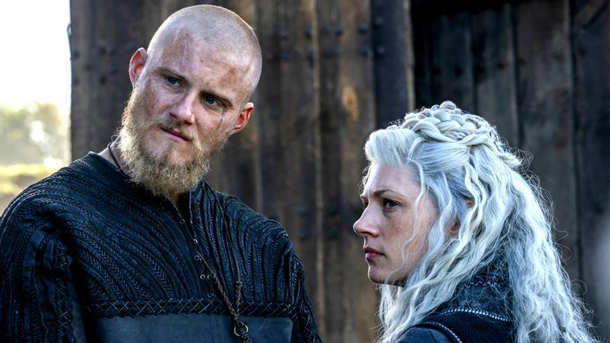
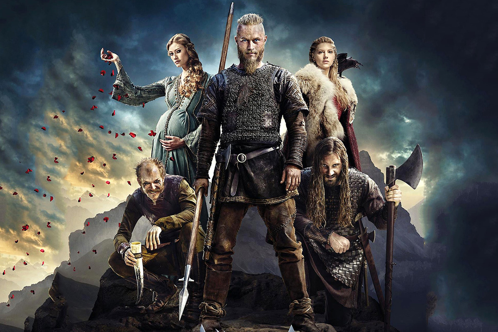
Comienza la batalla entre Ragnar y las fuerzas del Rey Horik contra Jarl Borg; La princesa Aslaug se dirige hacia Kattegat.
Ragnar se da prisa para intentar dominar el Oeste y Jarl Borg tiene sus propios planes de futuro sobre Kattegat.
Ragnar y Ecbert se enfrentan cara a cara; Jarl Borg reina con mano dura en Kattegat; ahora Rollo debe ser el líder de su gente Lagertha y Ragnar unen sus fuerzas para quitarle a Jarl Borg Kattegat.
Ademásk, Aslaug debe enfrentarse a las profecías y Bjorn debe tomar una decisión de nuevo. Ragnar y rey Horik no se ponen de acuerdo sobre cómo justiciar a Jarl Borg; el Rey Aelle llega en Wessex; el Rey Ecbert tiene en mente una nueva alianza. La última profecía de la princesa Aslaug se cumple cuando se prepara para dar a luz de nuevo; Ragnar y Horik tienen ideas muy diferentes sobre el verdadero propósito de su viaje a Wessex.
Ademásk, Aslaug debe enfrentarse a las profecías y Bjorn debe tomar una decisión de nuevo. Ragnar y rey Horik no se ponen de acuerdo sobre cómo justiciar a Jarl Borg; el Rey Aelle llega en Wessex; el Rey Ecbert tiene en mente una nueva alianza. La última profecía de la princesa Aslaug se cumple cuando se prepara para dar a luz de nuevo; Ragnar y Horik tienen ideas muy diferentes sobre el verdadero propósito de su viaje a Wessex.
Las flotas de Ragnar y Lagertha parten de Kattegat, una vez más, con destino Wessex, pero esta vez traen colonos; el Rey Ecbert por su parte acoge a los vikingos y les propone un trato.
Por su parte, Harbard, un misterioso vagabundo, se convierte en el Kattegat, cumpliendo lo predicho por los sueños de Aslaug, Siggy y Helga. El rey Ecbert visita el asentamiento vikingo mientras, en Mercia, las fuerzas vikingas y las de Wessex se enfrentan en la batalla de la colina de Ash. Por otro lado, Harbard llega a Kattegat y Aslaug y Helga quedan fascinadas pero Siggy sospecha.
Por su parte, Harbard, un misterioso vagabundo, se convierte en el Kattegat, cumpliendo lo predicho por los sueños de Aslaug, Siggy y Helga. El rey Ecbert visita el asentamiento vikingo mientras, en Mercia, las fuerzas vikingas y las de Wessex se enfrentan en la batalla de la colina de Ash. Por otro lado, Harbard llega a Kattegat y Aslaug y Helga quedan fascinadas pero Siggy sospecha.

La flota vuelve a Kattegat para descubrir que circunstancias trágicas esperan; Lagertha se entera que su condado ha sido usurpado y convence a Ragnar para viajar a Hederby con ella en un esfuerzo por recuperar su título.
Rolo piensa en la profecía que Seer hizo acerca de su destino, mientras se ultiman los preparativos para asaltar y saquear París; Kalf llega a Kattegat para participar en el asalto.
Los vikingos causan el pánico entre la población autóctona cuando llegan a París; el emperador Carlos declara en la corte que se quedará en la ciudad para defender París junto a su comandante, el conde Odo. París, comandada por Odo, se atrinchera a la espera del ataque vikingo, cuyo ejército ya está a sus puertas. Los vikingos están dispuestos a todo para penetrar las defensas que los parisinos prepararon contra ellos. Los vikingos golpean París con un segundo ataque; el emperador Carlos tiene que tomar una decisión difícil. En París, el Conde Odo convenció al rey para negociar el asedio con los Vikingos.
Los vikingos causan el pánico entre la población autóctona cuando llegan a París; el emperador Carlos declara en la corte que se quedará en la ciudad para defender París junto a su comandante, el conde Odo. París, comandada por Odo, se atrinchera a la espera del ataque vikingo, cuyo ejército ya está a sus puertas. Los vikingos están dispuestos a todo para penetrar las defensas que los parisinos prepararon contra ellos. Los vikingos golpean París con un segundo ataque; el emperador Carlos tiene que tomar una decisión difícil. En París, el Conde Odo convenció al rey para negociar el asedio con los Vikingos.
Ragnar se recupera de sus heridas en Kattegat mientras se desarrollan acontecimientos fuera de su control.
Ragnar y Floki siguen en desacuerdo mientras Rollo hace grandes esfuerzos para ganarse a su nueva novia, la princesa Gisla; las habilidades de supervivencia de Bjorn se ponen a prueba y el Rey Ecbert manda a su hijo Aethelwulf a rescatar a la reina Kwenthrith en Mercia.
Rollo encuentra un aliado poco probable en el Conde Odo, pero no puede escapar del menosprecio de su nueva novia.
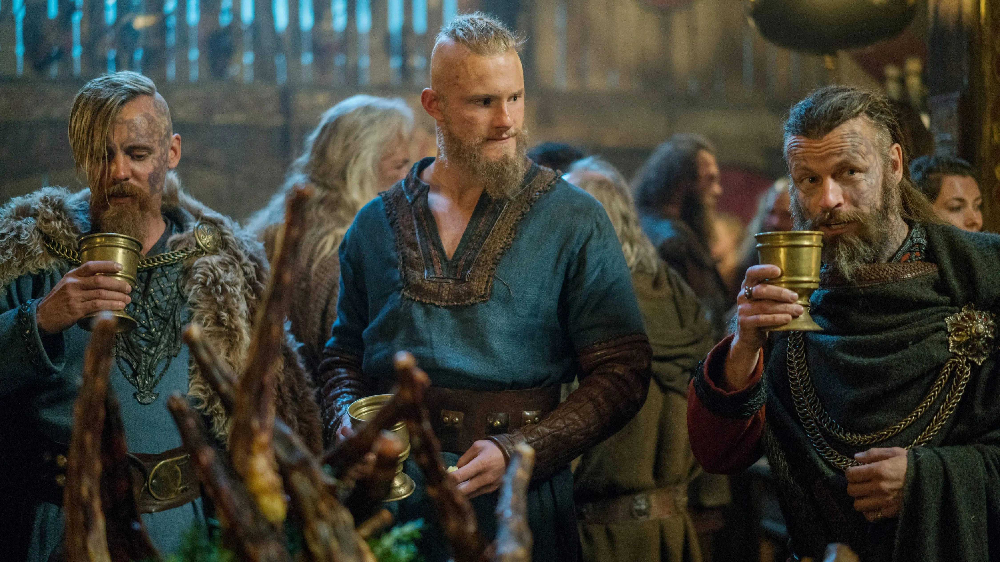
Ragnar le dice a Floki que ha de pagar un alto precio por sus acciones.
Rollo encuentra un aliado en el Conde Odo.
Ragnar revela su plan para atacar a París de nuevo, y, a pesar de que la flota es sacudida por la tormenta, el desafío es llegar a la Frankia, donde Rollo espera.
Ragnar le dice a Floki que ha de pagar un alto precio por sus acciones. Rollo encuentra un aliado en el Conde Odo. Ragnar revela su plan para atacar a París de nuevo, y, a pesar de que la flota es sacudida por la tormenta, el desafío es llegar a la Frankia, donde Rollo espera.
Ragnar le dice a Floki que ha de pagar un alto precio por sus acciones. Rollo encuentra un aliado en el Conde Odo. Ragnar revela su plan para atacar a París de nuevo, y, a pesar de que la flota es sacudida por la tormenta, el desafío es llegar a la Frankia, donde Rollo espera.
Ragnar regresa a casa para comprobar cómo están sus hijos y preparar su regreso a Wessex, pero los rumores de su muerte le han precedido y sus aliados tienen otros planes. Mientras, Björn se prepara para explorar el Mediterráneo.
Ragnar procura equipar su viaje a Wessex, aún siendo advertido que los dioses lo han abandonado; Bjorn se prepara para cumplir su sueño de explorar el Mediterráneo.
Ragnar procura equipar su viaje a Wessex, aún siendo advertido que los dioses lo han abandonado; Bjorn se prepara para cumplir su sueño de explorar el Mediterráneo.
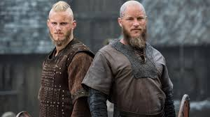
La flota de Ragnar naufraga ante la costa de Wessex. Lagertha intenta satisfacer una ambición largamente anhelada; Ragnar negocia una concesión inesperada del Rey Ecbert.
Ragnar e Ivar trazan un plan contra los Sajones y empiezan a comprenderse mejor el uno al otro.
La flota de Bjorn avanza y lanza un ataque por sorpresa. Mientras tanto, en Kattegat, Lagertha intenta tomar el poder.
La armada vikinga comienza a reunirse en Kattegat. El plan de Ragnar da sus frutos y la armada vikinga desembarca en la costa del reino anglo de Northumbria. La armada vikinga está causando estragos y provocando pánico a la población de Inglaterra. Pero el rey Ecbert y Aethelwulf trazan un plan para defender el reino. El príncipe Aethelwulf resulta sometido por la estrategia militar vikinga.
La armada vikinga comienza a reunirse en Kattegat. El plan de Ragnar da sus frutos y la armada vikinga desembarca en la costa del reino anglo de Northumbria. La armada vikinga está causando estragos y provocando pánico a la población de Inglaterra. Pero el rey Ecbert y Aethelwulf trazan un plan para defender el reino. El príncipe Aethelwulf resulta sometido por la estrategia militar vikinga.
Ivar trata de ganarse a Ubbe y Hvitserk con una estrategia arriesgada para el gran ejército. Crece un poder religioso entre los sajones. Floki toma otro rumbo.
Lagertha no está a gusto con el regreso del rey Harald a Kattegat. Se forman alianzas para enfrentar a los nórdicos que tomaron York. Floki navega aguas turbulentas.
El obispo Heahmund y Aethelwulf ponen en marcha el plan de batalla, que divide a los hijos de Ragnar. Harald presenta a Astrid ante su pueblo. Lagertha le hace una oferta a Ubbe, mientras Astrid considera la que le hizo Harald, Heahmund arma un nuevo plan de ataque y Bjorn expande sus horizontes.
El obispo Heahmund y Aethelwulf ponen en marcha el plan de batalla, que divide a los hijos de Ragnar. Harald presenta a Astrid ante su pueblo. Lagertha le hace una oferta a Ubbe, mientras Astrid considera la que le hizo Harald, Heahmund arma un nuevo plan de ataque y Bjorn expande sus horizontes.
Lagertha pierde el control sobre su pueblo, y un aliado paga un precio muy alto por la lealtad.
Bjorn hace cambios tras su llegada a Kattegat, donde Lagertha se prepara para la guerra. Astrid da una gran noticia, y la gente de Floki comienza a sospechar.
El enfrentamiento entre hermanos en la batalla de Kattegat salda viejas cuentas. Floki y Alfred imaginan otros mundos.
Después de la batalla, surgen nuevas relaciones y se juran lealtades. Por otro lado, Floki enfrenta viejos fantasmas, y la vida de Alfred da un giro. Se derrama sangre y se rompen lazos en la guerra de Kattegat, con Lagertha, Harald y Ubbe enfrentados a sus seres queridos en el campo de batalla.
Después de la batalla, surgen nuevas relaciones y se juran lealtades. Por otro lado, Floki enfrenta viejos fantasmas, y la vida de Alfred da un giro. Se derrama sangre y se rompen lazos en la guerra de Kattegat, con Lagertha, Harald y Ubbe enfrentados a sus seres queridos en el campo de batalla.
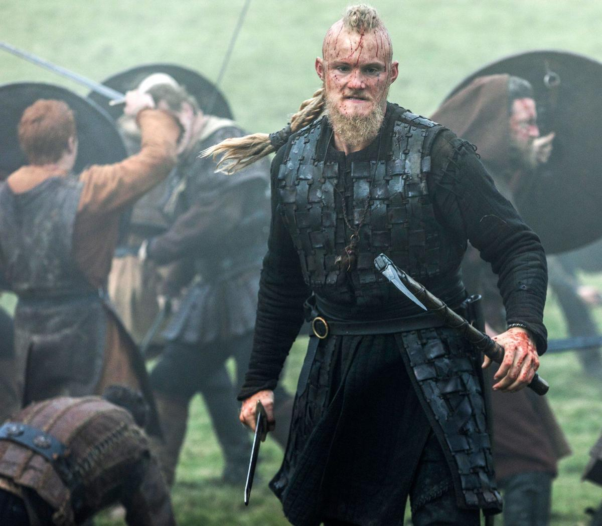
Tras la intensa batalla por Kattegat, Ivar queda obsesionado con la venganza. Bjorn recibe noticias inesperadas, y Lagertha evalúa sus opciones.
El dramático sacrificio de Ivar despierta sospechas. Surgen conspiraciones contra Alfred, y las fuerzas de Harald se acercan. Tras una tragedia, Floki tiene una epifanía. Acechado por los vikingos, Alfred se prepara para luchar por Wessex. Una visión perturbadora convence a Heahmund de dejar de lado sus deseos.
El dramático sacrificio de Ivar despierta sospechas. Surgen conspiraciones contra Alfred, y las fuerzas de Harald se acercan. Tras una tragedia, Floki tiene una epifanía. Acechado por los vikingos, Alfred se prepara para luchar por Wessex. Una visión perturbadora convence a Heahmund de dejar de lado sus deseos.
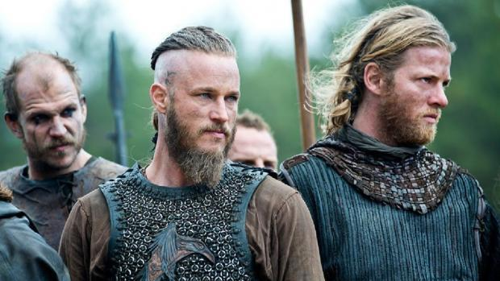
Tras la batalla, los hijos de Ragnar cumplen uno de sus mayores sueños. Bjorn encuentra un oponente de su talla, y Hvitserk descubre una nueva ruta.
Mientras una nueva amenaza se acerca a Wessex, Bjorn conspira con Harald, Ivar le hace una oferta irresistible a Hvitserk, y el destino de Floki cambia súbitamente. Ivar se muestra cada vez más impiadoso, Ubbe emprende un plan osado, Judith descubre algo sorprendente, y Hvitserk se esfuerza por persuadir a un aliado.
Mientras una nueva amenaza se acerca a Wessex, Bjorn conspira con Harald, Ivar le hace una oferta irresistible a Hvitserk, y el destino de Floki cambia súbitamente. Ivar se muestra cada vez más impiadoso, Ubbe emprende un plan osado, Judith descubre algo sorprendente, y Hvitserk se esfuerza por persuadir a un aliado.
En su escape por la Ruta de la Seda, los Rus capturan a Ivar. Bjorn asume el trono de Kattegat, pero Lagertha anuncia que se retira al campo.
El rey Bjorn recibe el pedido de ayuda militar que le hace el rey Harald. Ivar queda asombrado por la violenta toma de poder del príncipe Oleg de Kiev.
Gunnhild llega para reforzar el poblado de Lagertha. Los jarls y reyes de Noruega se preparan para elegir a un nuevo líder nacional. Ivar ve un fantasma de su pasado.
La elección del rey de Noruega tienen un resultado inesperado, así como consecuencias para Bjorn. Lagertha y su pueblo se enfrentan a los bandidos.
El flamante rey Harald encarcela a Olaf por oponerse a su elección, Bjorn siente que se avecina una tragedia en Kattegat. Oleg planea su invasión.
El rey Harald escucha noticias de extraños saqueadores. Ubbe y Torvi encuentran un misterioso viajero en Islandia y reciben a un nuevo bebé. Bjorn y Harald, muy a su pesar, se vuelven aliedos contra la invasión de los Rus.
El rey Harald escucha noticias de extraños saqueadores. Ubbe y Torvi encuentran un misterioso viajero en Islandia y reciben a un nuevo bebé. Bjorn y Harald, muy a su pesar, se vuelven aliedos contra la invasión de los Rus.
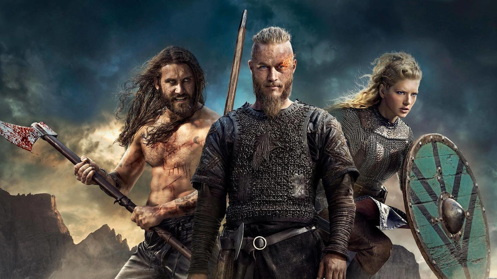

Ivar gana un posible aliado en su intriga contra Oleg. La frágil alianza de Harald y Bjorn se prepara para la invasión de los Rus en Escandinavia.
Herido de gravedad, Bjorn intenta liderar a su pueblo una vez más, mientras los Rus preparan una enorme invasión. Ubbe descubre la verdad sobre Kjetill.
Ubbe convence a los habitantes de Islandia de realizar un viaje de exploración. La derrota de los Rus crea vacíos de poder en Kattegat y Kiev.
La elección del nuevo soberano de Kattegat se lleva a cabo, pero una visita sorpresa interrumpe el procedimiento. El grupo de Ubbe llega a la costa, pero no a lo que buscaban.
Las facciones en Groenlandia derraman sangre y ahuyentan al grupo de Ubbe. Las tropas de Ivar y Dir conquistan Kiev para el príncipe Igor. Gunnhild toma una decisión.
Ubbe y sus seguidores languidecen en mar abierto. Ivar y Hvitserk reciben una helada acogida en Kattegat, hasta que el inquieto Ivar tiene una revelación. Ivar y Hvitserk dirigen al ejército del rey Harald hacia Inglaterra, donde el rey Alfred de Wessex abandona la villa real y marcha para reunirse con los hijos de Ragnar. El rey Alfred se enferma mientras el ejército vikingo toma la delantera. Ingrid maldice a Erik. Ubbe y su gente encuentran un nuevo mundo, pero no están solos. Ubbe y los colonos inician relaciones con los indígenas de la nueva tierra. La estrategia de Ivar atrae a todas las fuerzas de Alfred a una batalla devastadora.
Ubbe y sus seguidores languidecen en mar abierto. Ivar y Hvitserk reciben una helada acogida en Kattegat, hasta que el inquieto Ivar tiene una revelación. Ivar y Hvitserk dirigen al ejército del rey Harald hacia Inglaterra, donde el rey Alfred de Wessex abandona la villa real y marcha para reunirse con los hijos de Ragnar. El rey Alfred se enferma mientras el ejército vikingo toma la delantera. Ingrid maldice a Erik. Ubbe y su gente encuentran un nuevo mundo, pero no están solos. Ubbe y los colonos inician relaciones con los indígenas de la nueva tierra. La estrategia de Ivar atrae a todas las fuerzas de Alfred a una batalla devastadora.
Actores Principales
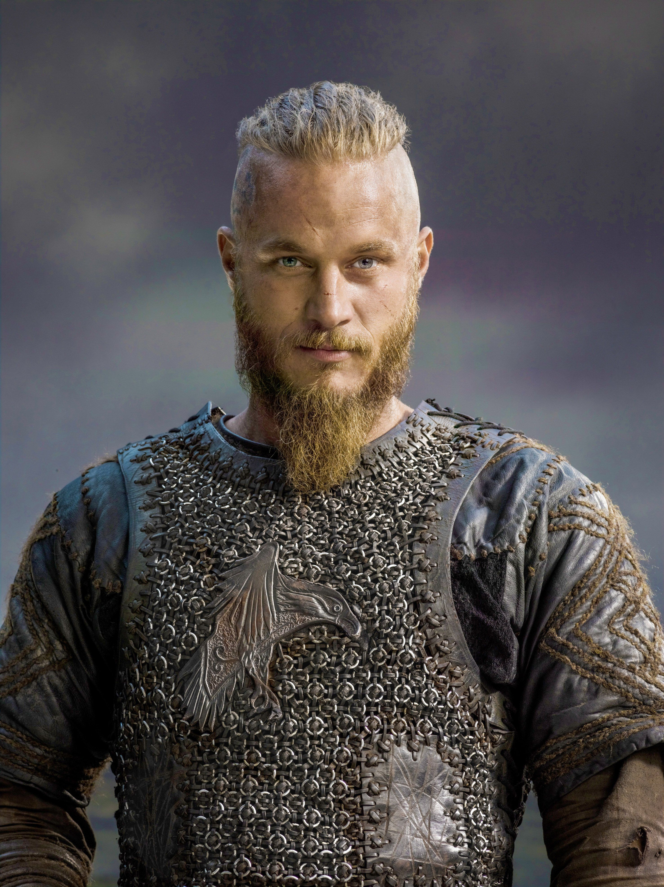
Ragnar
Ragnar
Lodbrok
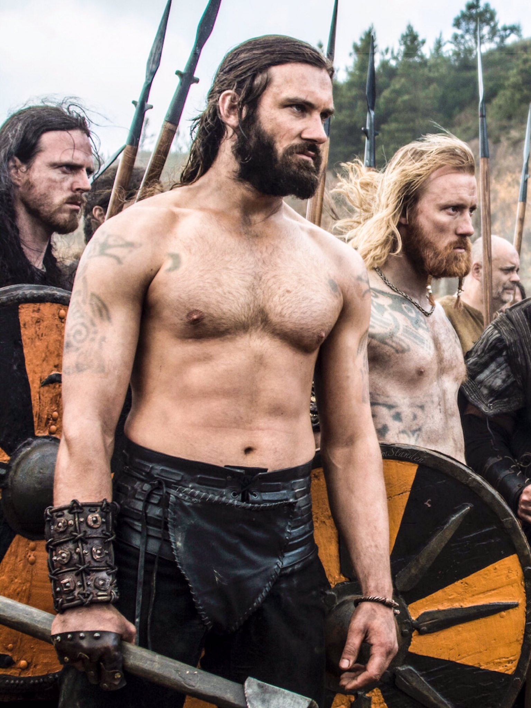
Rollo

Floki
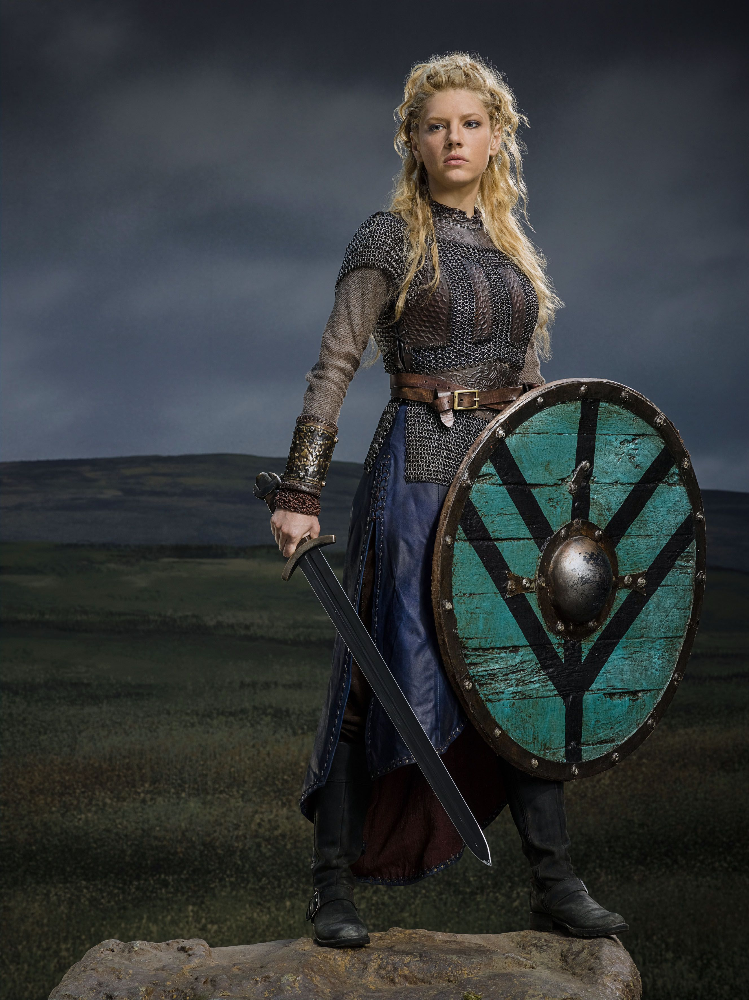
Lagertha
Hijos de Ragnar Lodbrok
Biografía hijos de Ragnar Lodbrok
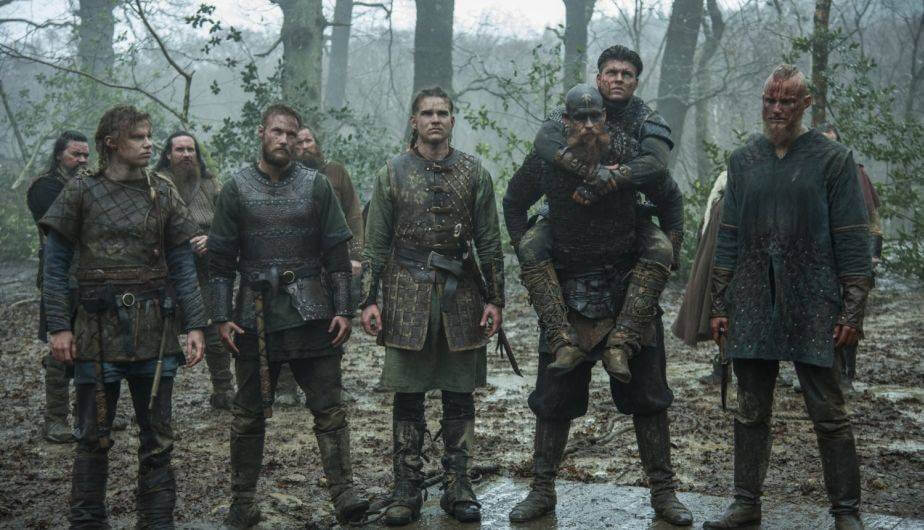
Björn:También conocido como Björn Járnsíđa en nórdico antiguo e islandés y como Björn Brazo de Hierro, aunque la traducción correcta sería Björn Costado de Hierro.
Ubbe Ragnarsson:También llamado Ubba, Hubba o Ubbi fue un importante líder vikingo, hijo de Ragnar Lodbrok y Aslaug-Kraka que, junto a sus hermanos Halfdan/Hvitsërk e Ivar Sin Huesos dirigió el Gran Ejército Pagano en sus asaltos por territorio inglés tras la muerte de su padre.
Hvitsärk Ragnarsson:Fue un líder escandinavo hijo del legendario y mítico Ragnar Lodbrok y la princesa Aslaug o Kraka que murió alrededor del año 877-878 y quien, junto con sus hermanos Ubbe e Ivar el Deshuesado, dirigieron el Gran Ejército Pagano.
Sigurd:Fue apodado como Serpiente en el Ojo u Ojo de Serpiente ya que nació con la marca del uróboros en la pupila de su ojo izquierdo.
Ubbe Ragnarsson:También llamado Ubba, Hubba o Ubbi fue un importante líder vikingo, hijo de Ragnar Lodbrok y Aslaug-Kraka que, junto a sus hermanos Halfdan/Hvitsërk e Ivar Sin Huesos dirigió el Gran Ejército Pagano en sus asaltos por territorio inglés tras la muerte de su padre.
Hvitsärk Ragnarsson:Fue un líder escandinavo hijo del legendario y mítico Ragnar Lodbrok y la princesa Aslaug o Kraka que murió alrededor del año 877-878 y quien, junto con sus hermanos Ubbe e Ivar el Deshuesado, dirigieron el Gran Ejército Pagano.
Sigurd:Fue apodado como Serpiente en el Ojo u Ojo de Serpiente ya que nació con la marca del uróboros en la pupila de su ojo izquierdo.
Contacto

Introduccion de datos